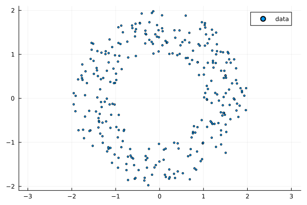
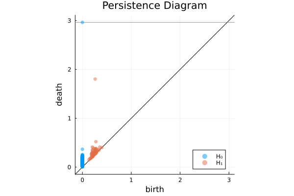
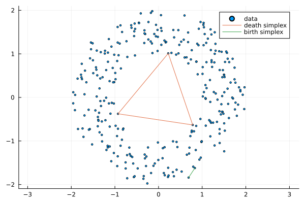
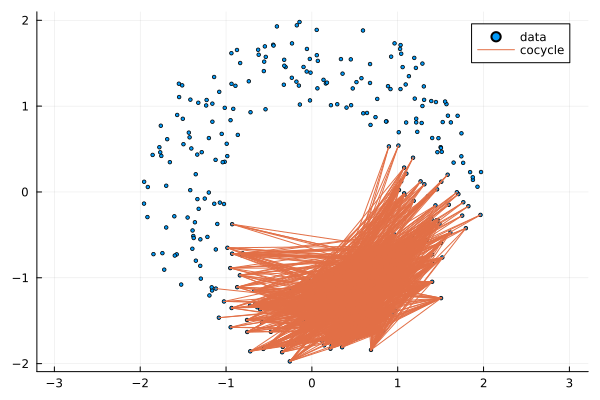
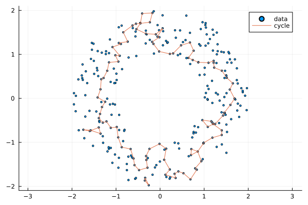
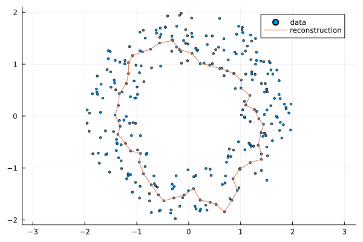
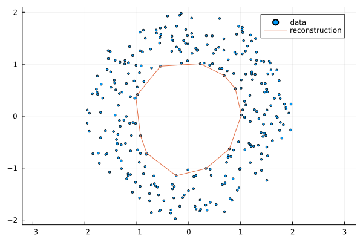
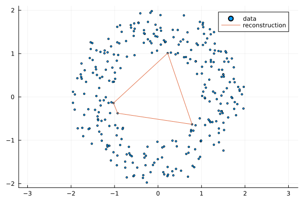

Cohomology, Homology, and Representatives
In this section, we will show how Ripserer can be used to find critical simplices and representative (co)cycles.
We start by loading some packages and generating some data.
using LinearAlgebra
using Plots
using Ripserer
function annulus(n, r1=1, r2=2, offset=(0, 0))
result = Tuple{Float64,Float64}[]
while length(result) < n
point = 2 * r2 * rand(2) .- r2
if r1 < norm(point) < r2
push!(result, (point[1] + offset[1], point[2] + offset[2]))
end
end
return result
end
data = annulus(300)
scatter(data; label="data", markersize=2, aspect_ratio=1)
Let's start by taking a look at the persistence diagram.
diagram = ripserer(data)
plot(diagram)
The diagram tells us that there is a persistent hole in the data, but tells us nothing about the location of the hole. Ripserer provides several methods to locate it. We'll start with the simplest.
Critical simplices
The first option is to find the death simplex of the interval.
We start by extracting the interval in question. Keep in mind that the diagrams are sorted by persistence, so the last element will always be the most persistent.
most_persistent = diagram[2][end][0.262, 1.8) with:
birth_simplex: Simplex{1, Float64, Int64}
death_simplex: Simplex{2, Float64, Int64}Notice that the interval has two simplices attached to it, the birth simplex and the death simplex. We can extract them with birth_simplex and death_simplex respectively.
death_sx = death_simplex(most_persistent)2-dimensional Simplex(index=1831459, birth=1.8021007580286512):
+(224, 127, 113)A simplex acts just like an array of indices, so it can be used to index into the data.
data[death_sx]3-element StaticArraysCore.SizedVector{3, Tuple{Float64, Float64}, Vector{Tuple{Float64, Float64}}} with indices SOneTo(3):
(0.22214232853776528, 1.0108685630049368)
(-0.9287794866608694, -0.37583476409402117)
(0.7827994197620325, -0.6319607400053937)Ripserer also provides a Plots recipe for plotting simplices. It is invoked by passing the simplex and the data to plot. Not that only the edges of the simplices are plotted.
scatter(data; label="data", markersize=2, aspect_ratio=1)
plot!(death_sx, data; label="death simplex")
plot!(birth_simplex(diagram[2][end]), data; label="birth simplex")
The birth simplex is the simplex that first connects the hole. The death simplex is the simplex that fills the hole in.
While the death simplex gives us a vague idea of where the hole is located, there are other methods available.
Representative Cocycles
By default, Ripserer computes persistent cohomology. The resulting diagrams of persistent homology and cohomology are the same, but computing cohomology is much more efficient. When computing persistent cohomology, we can tell Ripserer to also compute representative cocycles. This is controlled with the reps keyword argument.
Let's take a look at the most persistent cocycle of our data set.
diagram_cocycles = ripserer(data; reps=true)
most_persistent_co = diagram_cocycles[2][end][0.262, 1.8) with:
birth_simplex: Simplex{1, Float64, Int64}
death_simplex: Simplex{2, Float64, Int64}
representative: 1349-element Chain{Mod{2},Simplex{1, Float64, Int64}}Notice that now, the interval also has a representative attached. The representative is an array of pairs Simplex => value, where the value is the coefficient of the simplex. In reality, the type is different, but it acts exactly the same as a Pair.
cocycle = representative(most_persistent_co)1349-element Chain{Mod{2},Simplex{1, Float64, Int64}}:
+Simplex{1}((250, 3), 0.2619652251379079) => 1 mod 2
+Simplex{1}((160, 3), 0.2715345103929095) => 1 mod 2
+Simplex{1}((202, 157), 0.27624609292388325) => 1 mod 2
+Simplex{1}((199, 157), 0.27906914995543886) => 1 mod 2
+Simplex{1}((160, 58), 0.28838456843516314) => 1 mod 2
+Simplex{1}((210, 157), 0.3069986515799243) => 1 mod 2
+Simplex{1}((250, 58), 0.3137717699104337) => 1 mod 2
+Simplex{1}((221, 202), 0.32272512190080216) => 1 mod 2
+Simplex{1}((221, 36), 0.34355400787003865) => 1 mod 2
+Simplex{1}((221, 199), 0.3762289319863267) => 1 mod 2
⋮
+Simplex{1}((168, 58), 1.799138204223922) => 1 mod 2
+Simplex{1}((216, 156), 1.800621556559053) => 1 mod 2
+Simplex{1}((101, 12), 1.8007359597135215) => 1 mod 2
+Simplex{1}((181, 18), 1.8010588057867298) => 1 mod 2
+Simplex{1}((183, 163), 1.801173777472909) => 1 mod 2
+Simplex{1}((290, 81), 1.8013171242816783) => 1 mod 2
+Simplex{1}((210, 101), 1.8015034357391437) => 1 mod 2
+Simplex{1}((208, 11), 1.801952684796282) => 1 mod 2
+Simplex{1}((272, 259), 1.8020323047060893) => 1 mod 2The representative can be plotted in the same way as a simplex.
scatter(data; label="data", markersize=2, aspect_ratio=1)
plot!(cocycle, data; label="cocycle")
The cocycle is a collection of 1-simplices that, if removed, would break the cycle in our data set. This does not correspond to most people's intuitive understanding of a hole, but it can be useful in some situations. To find something more intuitive, we have to look to homology and its representative cycles.
Representative Cycles
Ripserer supports two algorithms for computing representative cocycles. One is computing persistent homology directly, and the other is involuted homology computation. Involuted homology computes cohomology first and then uses its result to recompute cycles. While this increases the running time somewhat, it is still usually much more efficient than computing persistent homology directly. The difference is especially large for filtrations where the number of simplices increases quickly with dimension, such as Vietoris-Rips filtrations. See this paper for more information.
Involuted homology is computed by passing the argument alg=:involuted to ripserer. If we wanted direct homology computation, we would use alg=:homology. The results for both cases are exactly the same.
Let's try it out. Note that invoking homology also turns on reps for dimensions one and higher.
diagram_cycles = ripserer(data; alg=:involuted)
most_persistent_ho = diagram_cycles[2][end][0.262, 1.8) with:
birth_simplex: Simplex{1, Float64, Int64}
death_simplex: Simplex{2, Float64, Int64}
representative: 102-element Chain{Mod{2},Simplex{1, Float64, Int64}}If an interval with a representative is passed to plot, the representative is plotted.
scatter(data; label="data", markersize=2, aspect_ratio=1)
plot!(most_persistent_ho, data; label="cycle")
The cycle is still not the prettiest, but it at least corresponds to a topological circle wound around the hole in the middle of the data set. Sometimes, the cycle will also have multiple connected components. All except one will be contractible at the time the cycle exists. To make the result look even better, we can try reconstructing the shortest representative cycle.
Reconstructed Shortest Cycles
This method uses information from the cocycle to reconstruct the shortest cycle. Essentially what the method does is that it picks an edge in the cocycle and connects it through the edges in the filtration at the specified time. A limitation of this method is that it only works for one-dimensional representatives.
Reconstruction is done on a per interval basis, as it would take a long time to reconstruct all cycles in large diagrams.
Let's start with a basic reconstruction.
filtration = diagram_cocycles[2].filtration
reconstructed_at_birth = reconstruct_cycle(filtration, most_persistent_co)
scatter(data; label="data", markersize=2, aspect_ratio=1)
plot!(reconstructed_at_birth, data; label="reconstruction")
This looks much nicer than the homology example, but could still use some improvement. To improve it, we can set a time at which to reconstruct the cycle.
As time goes on and more simplices are added to the filtration, the shapes of the shortest cycles change as well. The previous example was drawn at interval birth time, which is the default. Let's see what happens if we set the time to the interval midpoint.
midpoint = (death(most_persistent_co) - birth(most_persistent_co)) / 2
reconstructed_at_midpoint = reconstruct_cycle(filtration, most_persistent_co, midpoint)
scatter(data; label="data", markersize=2, aspect_ratio=1)
plot!(reconstructed_at_midpoint, data; label="reconstruction")
As an extreme case, let's look at what the cycle looks like right before its death.
scatter(data; label="data", markersize=2, aspect_ratio=1)
plot!(
reconstruct_cycle(filtration, most_persistent_co, death(most_persistent_co) - 0.01),
data;
label="reconstruction",
)
As the time nears the death time, the cycle gets closer to looking like the death simplex.
This page was generated using Literate.jl.